Installation et configuration des postes de travail, de la synchronisation et du relais web
« Votre santé, notre raison de vivre »
Version du document
1.0, du 16/11/2026
Destinataires
Administrateur système, Directrice de l’Administration et des Finances (DAF), prestataire chargé de l’hébergement
Relais web
sighcnt.nassieratoo.com
Diffusion
Interne à la clinique. Ne contient aucun secret.
Sommaire
Avant de commencer
À qui s’adresse ce manuel
Ce manuel s’adresse à la personne qui installe et administre SIGH-CNT : l’administrateur système, la DAF, ou le prestataire qui gère l’hébergement du relais web. Il ne décrit pas le travail quotidien des agents (accueil, soins, caisse, stock) : ce travail est décrit dans le Manuel d’utilisation.
SIGH-CNT est composé de trois parties :
Le poste de travail : l’application installée sur chaque ordinateur de la clinique. Un seul poste est la mère (le poste de référence de la clinique). Les autres postes sont des fileuls.
L’application mobile : elle sert aux soignants et à la réception de secours. Elle ne parle jamais au réseau local : elle passe par le relais web.
Le relais web : un site installé sur l’hébergement cPanel de la clinique, à l’adresse sighcnt.nassieratoo.com. Il transporte des enveloppes chiffrées. Il ne peut lire aucun dossier.
Les postes fileuls se synchronisent avec la mère sur le réseau local. La mère et les téléphones passent par le relais web.
Conventions du manuel
Les éléments d’interface sont écrits en gras, exactement comme à l’écran : cliquez sur Enregistrer.
Un chemin de navigation se lit avec la flèche : Système ➔ Sécurité & Utilisateurs ➔ Utilisateurs.
Les étapes numérotées se font dans l’ordre. Les listes à puces n’ont pas d’ordre.
Sur les captures, un cadre rouge numéroté montre le bouton à utiliser. Son numéro renvoie à l’étape du texte.
Le texte en police fixe est à taper tel quel (une commande, un nom de fichier, une adresse).
Les encadrés
ℹ️
Information
Une précision utile.
⚠️
Attention
Une erreur fréquente, une modification de rôle, ou une fonction pas encore vérifiée.
🛑
Alerte
Un risque de perte de données ou une action irréversible.
✅
Astuce, bonne pratique
Un raccourci ou la bonne configuration.
🔍
Où regarder
L’écran où vous observez une donnée.
⚙️
Paramétrage
Un réglage technique ou global.
Trois règles à garder en tête
Rien ne se supprime. On archive, et l’archivage s’annule (RG-14). Une fiche archivée reste lisible.
Une commande absente veut dire « pas le droit ». Le logiciel n’affiche pas un bouton grisé : il le retire. Si un agent ne voit pas un bouton, vérifiez ses droits (chapitre 3).
Toute action est signée. Chaque modification est journalisée avec son auteur, sa date et l’ancienne valeur (RG-12). Il n’y a aucune action anonyme.
État de vérification de ce manuel
⚠️
Attention : ce qui n’a pas encore été vérifié en conditions réelles
L’installateur Windows et l’application de poste n’ont jamais été compilés ni lancés sur un vrai Windows dans l’environnement de rédaction. La protection de la clé du poste par Windows (DPAPI) n’est pas éprouvée.
Le chiffrement de la base locale (SQLCipher) n’est pas encore branché sur le poste.
Le relais n’a pas encore été déployé sur l’hébergement cPanel réel. Les captures du panneau viennent d’une copie lancée en local.
La synchronisation n’a pas été mesurée entre deux ordinateurs physiques reliés par un vrai routeur.
L’imprimante Xprinter XP-Q800 et le boîtier MECeF n’ont pas été branchés.
ℹ️
D’où viennent les captures
Les écrans du poste sont montrés depuis la maquette de référence, avec des données de démonstration. Le poste reprend les mêmes écrans et les mêmes libellés ; quand un écran du poste diffère, le texte le dit. Les noms de personnes visibles sur les captures sont des noms de démonstration (« AGENT Démo »). Les écrans du relais viennent d’une copie du panneau lancée en local.
1. Installation des postes
1.1 Prérequis
Pour chaque ordinateur de la clinique
Windows 64 bits (l’installateur refuse un Windows 32 bits).
Un compte Windows administrateur pour installer (l’installation se fait dans Program Files).
De l’espace disque pour les données du poste. Elles vivent dans %LOCALAPPDATA%\SIGHCNT\donnees.
Pour la mère : un ordinateur allumé pendant les heures d’ouverture, relié au réseau local et à Internet.
Pour un fileul : l’adresse de la mère sur le réseau local (par exemple http://192.168.1.10:9000).
Pour construire l’installateur (une fois par version)
Flutter avec le bureau Windows activé.
Visual Studio 2022, charge de travail « Développement Desktop en C++ ».
Inno Setup 6.
Le code source de SIGH-CNT (dossier apps\poste).
⚙️
Paramétrage : la version
La version de l’application se change à un seul endroit : le fichier apps\poste\pubspec.yaml. L’installateur reprend cette version dans son nom.
1.2 Construire l’installateur Windows
Ouvrez une invite de commande dans le dossier apps\poste.
Tapez build_windows.bat puis appuyez sur Entrée.
Attendez la fin des neuf étapes : [1/9] Prerequis, fermeture de l’application, version, flutter pub get, génération de code, flutter build windows --release, runtime Visual C++, vérification des fichiers, [9/9] Installateur.
Lisez le message TERMINE : il donne le chemin du fichier, sa taille et son empreinte SHA-256.
Récupérez build\installer\SIGH_Poste_Setup_<version>.exe et son fichier .sha256.
ℹ️
En cas d’échec
Le script s’arrête à la première étape en échec, affiche *** CONSTRUCTION INTERROMPUE *** et nomme le fichier manquant. Corrigez ce point, puis relancez le script.
✅
Bonne pratique
Avant d’installer sur un poste, comparez l’empreinte SHA-256 du fichier copié avec celle du fichier .sha256. Deux empreintes différentes veulent dire un fichier abîmé pendant la copie.
⚠️
Attention : SmartScreen
L’installateur n’est pas signé par un certificat de code (décision différée, PRD de l’installateur, question Q5). Windows peut afficher un avertissement SmartScreen au premier lancement. Vérifiez l’empreinte, puis choisissez d’exécuter quand même.
1.3 Installer le poste
Copiez SIGH_Poste_Setup_<version>.exe sur l’ordinateur.
Double-cliquez sur le fichier. Acceptez la demande de droits administrateur.
L’assistant d’installation est en français. Le dossier proposé est Program Files\SIGH-CNT : gardez-le.
Cochez si vous le voulez l’option d’icône sur le bureau (elle est décochée par défaut).
Cliquez sur Installer, puis laissez cochée la case qui lance SIGH-CNT Poste à la fin.
Le raccourci SIGH-CNT Poste est créé dans le menu Démarrer, dans le groupe SIGH-CNT.
ℹ️
Où vivent les données
Rien ne s’écrit dans Program Files. La base du poste, sa clé, sa configuration (poste.json) et, sur la mère, les sauvegardes, vivent dans %LOCALAPPDATA%\SIGHCNT\donnees. Les exports que vous faites vont dans votre dossier Téléchargements. Une mise à jour ne touche jamais ces dossiers.
✅
Mettre à jour un poste
Lancez le nouvel installateur par-dessus l’ancien. Il ferme l’application, remplace les fichiers du programme et garde les données.
1.4 Premier démarrage : choisir le rôle du poste
Au premier lancement, un poste qui n’a encore aucun compte affiche l’écran Installation du poste. Deux choix sont proposés :
Première installation de la clinique : ce poste devient le poste principal. Vous créez le compte administrateur, puis vous configurez la clinique. Faites ce choix une seule fois, sur l’ordinateur qui sera la mère.
Rejoindre une clinique existante : la clinique est déjà installée sur un autre poste. Vous saisissez l’adresse de ce poste et un code d’appairage. Aucune configuration n’est à refaire. Faites ce choix sur tous les autres ordinateurs (section 1.7).
ℹ️
Information
L’assistant ne s’ouvre que sur un poste jamais installé et sans aucun compte. Un poste qui porte déjà des comptes garde son chemin habituel : l’écran de connexion.
1.5 Créer le premier administrateur et noter le code de secours
1. Créer l’administrateur
Cliquez sur Première installation de la clinique.
Dans l’écran Créer l’administrateur, remplissez Nom complet (au format NOM Prénom).
Saisissez l’Identifiant : trois caractères au moins, en minuscules, chiffres, point, tiret ou tiret bas (par exemple prenom.nom).
Choisissez un Mot de passe (8 caractères au moins) et recopiez-le dans Confirmer le mot de passe.
Cliquez sur Créer le compte.
ℹ️
Information
Vous choisissez vous-même votre mot de passe. Il n’est écrit nulle part : le poste n’en garde qu’une empreinte.
2. Ranger le code de secours
L’écran Votre code de secours s’affiche. Ce code de 25 caractères (format XXXXX-XXXXX-XXXXX-XXXXX-XXXXX) permet de retrouver l’accès administrateur si vous perdez votre mot de passe.
Cliquez sur Imprimer. La feuille porte le titre Code de secours de l’administrateur et la mention Document confidentiel à ranger au coffre.
Rangez la feuille au coffre de la Direction.
Cochez J’ai rangé ce code en lieu sûr.
Cliquez sur Ouvrir le tableau de bord.
🛑
Alerte
Le code de secours ne s’affiche qu’une fois. Sans lui et sans mot de passe, plus personne ne peut administrer le poste. Ne l’envoyez jamais par messagerie et ne le photographiez pas.
3. Mot de passe administrateur perdu
Sur l’écran de connexion, ouvrez Mot de passe administrateur perdu.
Saisissez votre Identifiant, le Code de secours de 25 caractères, puis un Nouveau mot de passe et sa confirmation.
Cliquez sur Remplacer le mot de passe.
L’écran Mot de passe remplacé affiche un nouveau code de secours : l’ancien est consommé. Imprimez le nouveau et rangez-le au coffre.
Cliquez sur Retour à la connexion.
1.6 Les configurations à faire avant l’utilisation
Après la création du premier compte, la fenêtre Configurations à faire avant l’utilisation s’ouvre. Faites ces étapes dans l’ordre : ce qui est réglé sur la mère est repris par les autres postes et les mobiles. Chaque étape porte un état : À faire, Reportée ou Faite.
Étape
Ce que vous faites
Voir
1. Activer la mère
Relais web, secret de la mère et clé de clinique. Une seule mère par clinique. Si le relais est injoignable, vous pouvez reporter : rien n’est diffusé tant que la mère n’est pas activée.
Section 2.1
2. Configurer la clinique
Huit écrans à ouvrir et à vérifier : Papier à en-tête officiel, Paramètres fiscaux (IFU / RCCM), Activité des modules, Tarifs et prix, Natures de facture, Paramètres comptables & obligations, Configuration fiscale (MECeF), Rôles & permissions.
Chapitres 3, 4 et 6
3. Créer les comptes des agents
Un compte par agent, avec son rôle.
Section 3.2
4. Appairer les postes et les mobiles
Depuis la mère, un code par appareil.
Sections 2.4 et 2.5
Quand les quatre étapes sont faites, cliquez sur Clore l’assistant. Le message L’assistant d’installation est clos. confirme la fin.
⚠️
Attention : un second administrateur est obligatoire
Le poste refuse de clore l’assistant tant qu’il n’y a qu’un seul administrateur actif. Créez un second compte administrateur à l’écran Utilisateurs et définissez-lui un mot de passe. Ainsi, la clinique n’est jamais bloquée par l’absence d’une seule personne.
🔍
Où regarder
La même progression se lit sur la mère à l’écran Poste mère ➔ Cycle de vie ➔ Assistant de première mise en service (figure ci-dessous). Chaque étape se reprend avec Ouvrir.
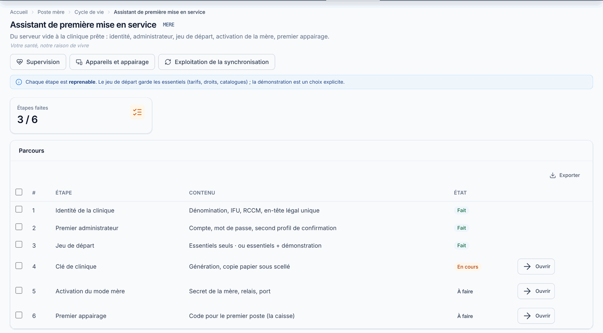
L’assistant de première mise en service sur la mère : étapes faites, en cours et à faire.
1.7 Rejoindre une clinique existante (poste fileul)
Préparez d’abord un code d’appairage sur la mère (section 2.4). Le code a 8 caractères, il ne sert qu’une fois et il expire au bout de 15 minutes.
Sur le nouvel ordinateur, à l’écran Installation du poste, cliquez sur Rejoindre une clinique existante.
Dans Adresse de la mère, saisissez l’adresse de la mère sur le réseau local, au format http://adresse:port (par exemple http://192.168.1.10:9000).
Dans Code d’appairage, saisissez les 8 caractères affichés par la console de la mère.
Cliquez sur Rejoindre.
L’écran Poste rattaché s’affiche : la mère diffuse sa configuration, cela prend quelques secondes. Attendez le message Réception de la configuration.
Cliquez sur Aller à la connexion. Les agents se connectent avec les comptes créés sur la mère.
ℹ️
Information
Un fileul ne refait aucune configuration : comptes, rôles, tarifs et identité viennent de la mère. Il reçoit la configuration et refuse de l’écrire, en le disant.
⚠️
Erreurs fréquentes
Adresse invalide : l’adresse doit commencer par http:// et finir par le port (:9000 par défaut).
Code expiré ou déjà utilisé : demandez un nouveau code sur la mère.
La mère est éteinte ou le pare-feu Windows de la mère bloque le port : le fileul ne la joint pas.
1.8 Désinstaller un poste
La désinstallation se lance depuis Paramètres Windows ➔ Applications ➔ SIGH-CNT Poste, ou depuis le raccourci de désinstallation du groupe SIGH-CNT.
Le programme ferme l’application en cours.
Il propose une sauvegarde : Voulez-vous faire une SAUVEGARDE de ce poste avant de continuer ? Répondez Oui. La copie part dans Documents\SIGH-CNT-Sauvegarde-AAAA-MM-JJ_HHMM et n’est jamais supprimée.
Il affiche un avertissement : désinstaller supprime aussi toutes les données du poste. Non est le choix par défaut et annule tout.
Répondez Oui seulement si vous voulez vraiment tout supprimer.
🛑
Alerte : perte définitive
Les saisies qui n’ont pas encore été synchronisées sont perdues, définitivement. Sur la mère, la base est la copie de référence de la clinique : les fileuls ne la reconstituent pas entièrement. Ne désinstallez jamais la mère sans une sauvegarde vérifiée (chapitre 5). Pour remplacer la mère par une autre machine, utilisez la restauration (section 5.5), jamais une copie de fichiers.
ℹ️
Mode silencieux
Lancé en mode silencieux (/SILENT ou /VERYSILENT), le désinstallateur ne pose aucune question et garde les données.
2. Postes et synchronisation
2.1 Activer le mode mère
La mère est le même logiciel qu’un fileul, avec ses modules complémentaires (synchronisation, supervision, sauvegardes). Elle s’active sur un seul ordinateur, le serveur local de la clinique.
1. Préparer les trois informations
L’adresse du relais web : sighcnt.nassieratoo.com. Tapez le nom seul, sans https:// : le poste l’ajoute.
Le secret de la mère : le même texte que RELAIS_SECRET_MERE dans le fichier .env du relais (section 7.3). Long et aléatoire, 32 caractères au moins.
La clé de clinique : 16 caractères au moins. Elle chiffre tout ce qui quitte la clinique.
🛑
Alerte : la clé de clinique
La clé de clinique n’est jamais envoyée au relais. Sans elle, rien de ce qui a quitté la clinique (journal chiffré, sauvegardes hors site) ne peut être restauré. Écrivez-la sur papier, mettez-la sous scellé, et confiez-la à un détenteur nommé par la Direction (section 2.6).
2. Activer
Ouvrez Système ➔ Configuration Clinique ➔ Ce poste (mode fileul / mère) (figure 1). Pendant l’installation, vous pouvez aussi cliquer sur Activer maintenant dans la fenêtre des configurations.
Cliquez sur Activer le mode mère (figure 2).
Remplissez Adresse du relais web, Secret de la mère, Clé de clinique (16 caractères au moins).
Remplissez si vous le voulez Nom de ce poste (facultatif), par exemple « Poste principal, bureau de la Direction ». C’est le nom que le panneau du relais affichera.
Cliquez sur Activer. Le mode du poste passe à Mère et le service de synchronisation à En marche (figure 3).
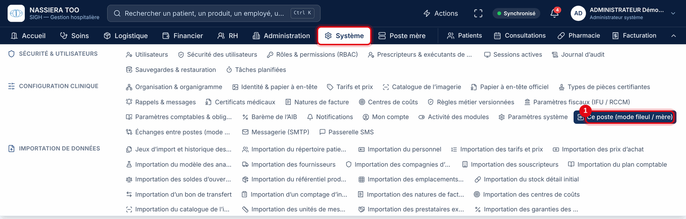
Le ruban : Système ouvre ses rangées. L’entrée Ce poste (mode fileul / mère) est réservée à l’administrateur et à la DAF.L’écran Ce poste d’un fileul : bouton Activer le mode mère.
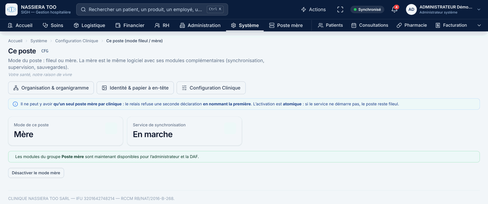
Après l’activation : mode Mère, service En marche, groupe Poste mère ouvert dans le ruban.
⚠️
Une seule mère par clinique
L’activation exige de joindre le relais. Si une autre mère est déjà déclarée, le relais refuse en la nommant : « Une mère est déjà active : … Il ne peut y avoir qu’un seul poste mère par clinique. » Une mère qui a donné signe de vie depuis moins de 5 minutes ne peut pas être remplacée : arrêtez-la d’abord. L’activation est atomique : si le service ne démarre pas, le poste reste fileul.
⚠️
Messages d’erreur à l’activation
Le relais n’a pas répondu : vérifiez Internet et l’adresse. Vous pouvez cliquer sur Reporter l’activation et revenir plus tard.
Le secret de la mère est refusé par le relais : le texte saisi diffère de RELAIS_SECRET_MERE.
Adresse du relais invalide (ex. sighcnt.nassieratoo.com) : corrigez la saisie.
⚙️
Paramétrage : le réseau local
La mère écoute par défaut sur le port 9000. Autorisez ce port dans le pare-feu Windows de la mère pour le réseau privé de la clinique, et donnez à la mère une adresse fixe sur le routeur. Les fileuls la joignent à http://<adresse de la mère>:9000.
2.2 La console de la mère
Une fois la mère active, le ruban affiche le groupe Poste mère. Il est réservé à l’administrateur et à la DAF. Il a cinq rangées :
Rangée
Écrans
Exploitation de la synchronisation
Supervision, Appareils et appairage, Conflits et doublons, « À traiter » consolidé, Journal des opérations, Plages de numéros et baux de stock, Lots de tournée (mobiles)
Sécurité et continuité
Journal technique, Sauvegardes et restauration, Clé de clinique, Intégrité et altérations, Réinitialisation de production
Liaison avec le relais
Relais en ligne, Indicateurs publiés
Plateforme locale
Service et démarrage, Base de données locale, Réseau local, Planificateur, Notifications serveur
Cycle de vie
Assistant de première mise en service, Mises à jour et compatibilité, Import de migration
2.3 Superviser la mère
Ouvrez Poste mère ➔ Exploitation de la synchronisation ➔ Supervision. L’écran donne la santé de la mère d’un coup d’œil : base, disque, sauvegarde, relais, postes, horloges, intégrité.
La supervision : santé globale, époque, opérations, retard vers le relais, puis un contrôle par ligne. Le bouton Sauvegarder maintenant (1) lance une sauvegarde chiffrée.
Un contrôle qui ne peut pas être mesuré est affiché Inconnu. Il ne rassure jamais : l’état global est le pire des contrôles.
Un poste dont l’horloge dérive de plus de 2 minutes est signalé Horloge à vérifier. Remettez l’heure de cet ordinateur à jour.
Un poste silencieux depuis longtemps est signalé À surveiller.
🔍
Où regarder
Le retard de réplication vers le relais se lit aussi à Poste mère ➔ Liaison avec le relais ➔ Relais en ligne (section 2.7). Les conflits à trancher sont à Conflits et doublons.
2.4 Appairer un poste fileul
Sur la mère, ouvrez Poste mère ➔ Exploitation de la synchronisation ➔ Appareils et appairage.
Cliquez sur Appairer un poste (figure, cadre 1).
Saisissez le Nom de l’appareil (par exemple « Caisse principale », « Laboratoire »).
Cliquez sur Générer le code. Le Code d’appairage s’affiche : À usage unique, valable 15 minutes.
Sur le nouveau poste, faites Rejoindre une clinique existante avec ce code (section 1.7).
Vérifiez que le poste apparaît dans la liste avec l’état Actif.
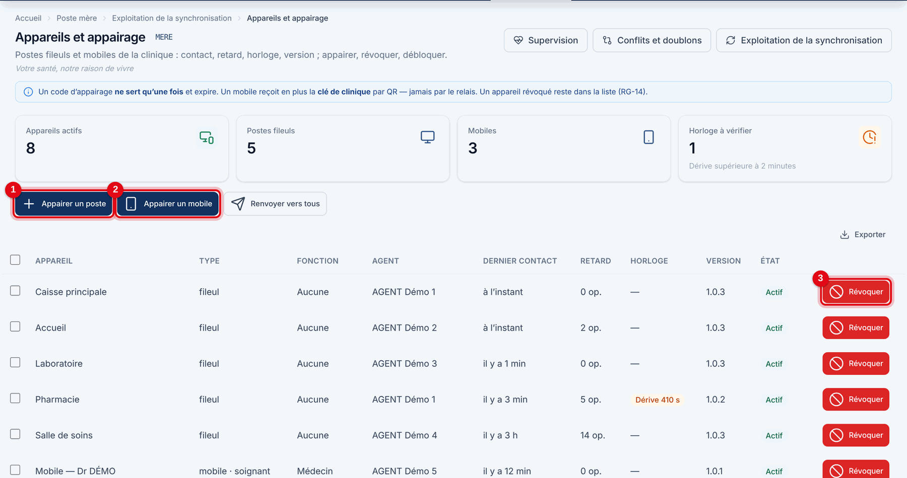
Appareils et appairage : (1) Appairer un poste, (2) Appairer un mobile, (3) Révoquer un appareil.
Pour chaque appareil, la liste donne son type, sa fonction, l’agent, le dernier contact, le retard (opérations en attente), l’horloge, la version et l’état.
2.5 Appairer un téléphone
Un téléphone ne parle jamais au réseau local : il passe par le relais web. La mère doit donc être active et reliée au relais.
Sur la mère, à Appareils et appairage, cliquez sur Appairer un mobile.
Choisissez le Profil du téléphone : Soignant ou Réception de secours.
Pour un soignant, choisissez la Fonction du soignant (médecin, sage-femme, infirmier, aide-soignant). La fonction est fixée par ce code : le téléphone ne peut ni la choisir ni la changer.
Cliquez sur Générer le code.
Sur le téléphone, saisissez le code d’appairage et la clé de la clinique (ou faites lire le QR d’appairage affiché par la mère, section 2.6).
La fenêtre Code d’appairage, mobile : profil et fonction fixés par le code.
🛑
Alerte
Ne transmettez jamais la clé de la clinique par messagerie, SMS ou courriel. Saisissez-la vous-même sur le téléphone, ou faites lire le QR sur place.
⚠️
Changer la fonction d’un téléphone
Un appareil déjà appairé ne reprend pas un autre code. Pour changer sa fonction, révoquez-le, puis appairez-le de nouveau avec un nouveau code.
Révoquer un appareil
À Appareils et appairage, cliquez sur Révoquer sur la ligne de l’appareil.
Confirmez. L’appareil ne pourra plus synchroniser.
Un poste révoqué garde ses données locales et se met en état suspendu à son retour. Un téléphone révoqué est effacé à son prochain contact. La fiche de l’appareil reste dans la liste (RG-14).
2.6 La clé de clinique
Ouvrez Poste mère ➔ Sécurité et continuité ➔ Clé de clinique.
La clé de clinique : empreinte de contrôle, date de création, copie papier. (1) Imprimer la copie papier, (2) Faire tourner la clé.
Cliquez sur Imprimer la copie papier (1).
Mettez la feuille sous scellé et notez le numéro du scellé.
Enregistrez l’attestation : date, détenteur, numéro de scellé, personne qui a contrôlé. Tant que le détenteur n’est pas désigné, l’écran affiche Détenteur de la copie papier non désigné.
ℹ️
Information
Le bouton Afficher le QR d’appairage mobile sert à appairer un téléphone sur place sans recopier la clé. Le bouton Faire tourner la clé (2) remplace la clé : faites-le seulement en cas de soupçon de fuite, et imprimez aussitôt la nouvelle copie papier.
2.7 La liaison avec le relais
Ouvrez Poste mère ➔ Liaison avec le relais ➔ Relais en ligne.
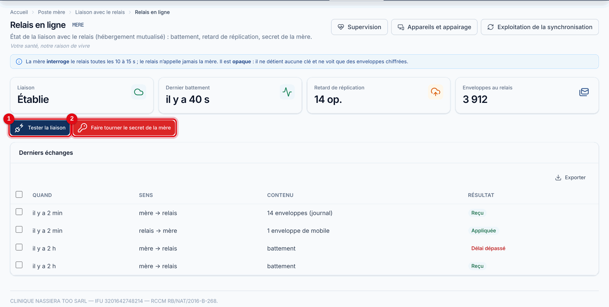
Relais en ligne : état de la liaison, dernier battement, retard de réplication, enveloppes au relais. (1) Tester la liaison, (2) Faire tourner le secret de la mère.
La mère interroge le relais toutes les 10 à 15 secondes. Le relais n’appelle jamais la mère : elle est derrière le routeur de la clinique.
Si Internet est coupé, les fileuls continuent de se synchroniser avec la mère. Le retard vers le relais monte et se voit. Au retour d’Internet, la mère rattrape seule.
Si la mère se tait plus de 5 minutes, le relais lève une alerte « battement ».
⚙️
Faire tourner le secret de la mère
Changez d’abord RELAIS_SECRET_MERE dans le .env du relais (section 7.3), puis saisissez le même texte sur la mère avec Faire tourner le secret de la mère. Entre les deux gestes, la mère ne peut plus déposer.
2.8 Le mode pair (échanges entre postes par le relais)
Le mode pair permet à des postes de s’échanger leurs opérations par le relais, sans passer par la mère (utile si la mère est éteinte). Ouvrez Système ➔ Configuration Clinique ➔ Échanges entre postes (mode pair).
Remplissez Adresse du relais, Nom de ce poste et Code d’appairage (usage unique).
Cochez Activer le mode pair sur ce poste.
Cliquez sur Enregistrer la configuration (1).
Sur le premier poste seulement, cliquez sur Générer la clé (2). Notez la clé : elle ne sera plus affichée. Tous les postes doivent porter la même clé.
Le mode pair : configuration, clé unique de la clinique, récupération de la clé par courriel.
ℹ️
Information
Le réglage prend effet au prochain lancement du poste. Les opérations sont chiffrées de bout en bout : le relais ne voit que des enveloppes.
2.9 Ce qui se passe pendant une coupure
Situation
Ce qui continue
Ce qui attend
Un fileul ne joint plus la mère
Saisie, caisse, impression, sortie de stock dans la part du poste, numérotation dans sa plage. La pastille dit Hors ligne depuis N min.
Les validations faites par un autre poste, la configuration de la mère.
La mère n’a plus Internet
Toute la clinique, sur le réseau local.
Les téléphones, la copie au relais. La mère rattrape seule au retour.
Retour de la liaison
Tout remonte une seule fois. Deux postes qui ont modifié le même champ sont marqués en conflit à la mère, jamais écrasés en silence. Un stock devenu négatif hors ligne est détecté et marqué (RG-03).
ℹ️
Information
Le détail, avec la preuve de chaque affirmation, est dans le guide docs/guides/PANNE-DE-CONNEXION.md.
3. Utilisateurs et droits
3.1 Comprendre les droits : rôle, fonction, secteur, gestes réservés
Les droits de SIGH-CNT ont trois axes, plus les gestes réservés :
Axe
Ce qu’il décide
Où il se règle
Rôle
Les écrans ouverts (voir, éditer, annuler, lecture seule).
Sur le compte de l’agent ; la fiche du rôle à Rôles & permissions (RBAC).
Fonction
Les données : qui prescrit, qui exécute les soins, quels résultats il voit.
Onglet Habilitations métier.
Secteur
Le périmètre : « son secteur » ou « tous ».
Onglet Habilitations métier et fiche des soignants (Prescripteurs & exécutants de soins).
Geste réservé
Un acte qui engage un professionnel nommé (valider un seuil du laboratoire, décider un prix, régler la clôture, exporter un tableau…). Il ne se déduit d’aucun droit d’écran.
Bouton Régler les gestes réservés de ce rôle de la fiche du rôle.
ℹ️
RG-13, le cloisonnement
Le médical est réservé au soignant habilité ; le financier et les RH aux profils comptables et RH. Fermer un module le retire du ruban et de la recherche globale : l’écran devient inatteignable, pas seulement invisible. Le moteur refuse aussi l’écriture : masquer un bouton ne protège rien, le logiciel contrôle chaque geste.
3.2 Créer un compte utilisateur
Ouvrez Système ➔ Sécurité & Utilisateurs ➔ Utilisateurs.
Cliquez sur Nouveau (figure, cadre 1).
Dans la fenêtre Nouveau compte, saisissez l’Identifiant de connexion (format usuel : initiale du prénom, point, nom).
Choisissez l’Agent rattaché (sa fiche du personnel) et le Service.
Choisissez le Rôle (RBAC).
Laissez cochés Compte actif et Changement obligatoire à la première connexion. Cochez Authentification à deux facteurs pour un profil à privilèges élevés.
Saisissez un Mot de passe provisoire (huit caractères au moins) et sa confirmation.
Cliquez sur Créer.
Remettez le mot de passe provisoire à l’agent en main propre. Il devra le changer à sa première connexion.
La liste des comptes. (1) Nouveau.La fenêtre Nouveau compte. (1) Créer.
⚠️
Aucun compte partagé
Chaque agent a son identifiant individuel. Un compte partagé rend la journalisation inutile (RG-12). Un compte archivé ou désactivé est refusé à la connexion.
ℹ️
Un agent quitte la clinique
Ne supprimez pas son compte : archivez-le (bouton d’archivage de la ligne). Il ne peut plus se connecter, et son historique reste lisible.
🔍
Où regarder
Sécurité des utilisateurs (réservé à l’administrateur) : échecs de connexion, comptes bloqués, double facteur. Sessions actives : qui est connecté et depuis quel poste. Journal d’audit : qui a fait quoi, avec l’ancienne et la nouvelle valeur.
Rôles & permissions : (1) Matrice des droits, (2) Détail par rôle, (3) Habilitations métier.
1. Modifier les droits d’un rôle par module
Ouvrez l’onglet Détail par rôle.
Sur la carte du rôle, cliquez sur Droits.
Dans la fenêtre Droits du rôle « … », cochez pour chaque module Voir, Éditer, Annuler ou Lecture seule. Les boutons Tout ouvrir, Tout en lecture seule et Tout fermer agissent sur toutes les lignes.
Cliquez sur Enregistrer les droits.
La fenêtre des droits d’un rôle : trois droits par module ; la lecture seule est la combinaison « voir sans agir ».
2. Régler les gestes réservés d’un rôle
Ouvrez l’onglet Matrice des droits.
Sur la ligne du rôle, cliquez sur l’icône Régler les gestes réservés de ce rôle (tampon).
Cochez ou décochez chaque geste dans la colonne Accordé. La colonne Origine rappelle le réglage d’origine.
Cliquez sur Enregistrer. Le bouton Retirer les réglages rend à chaque geste son réglage d’origine.
Les gestes réservés d’un rôle : un droit par geste.
Les autres icônes de la ligne d’un rôle : Modifier les droits de ce rôle, Régler écran par écran, Régler les importations de ce rôle, Renommer ce rôle, Archiver ce rôle.
⚠️
Attention : modifier un rôle
Un changement de rôle s’applique à tous les comptes de ce rôle, sur tous les postes, après synchronisation. Une surcharge accorde autant qu’elle restreint. Un rôle archivé ferme les comptes qui le portent. Prévenez les agents concernés avant d’enregistrer.
ℹ️
Les gestes réservés semés
Geste
Rôles par défaut
Valider un seuil de variation brutale du laboratoire
Biologiste médical
Corriger le texte lu par machine d’un scan
La plupart des rôles qui numérisent
Voir toutes les files du centre « Validations en attente »
DAF, administrateur, Direction, Directeur Médical, comptable, surveillant, agent administratif
Régler le circuit de la clôture annuelle
Administrateur, DAF
Décider un changement de prix
Administrateur, DAF, Direction
Régler les paramètres de clinique
Administrateur, DAF
Exporter ou imprimer les lignes d’un tableau
Tous les rôles
3.4 Fonction et secteur
L’onglet Habilitations métier donne, pour chaque fonction, ce qu’elle voit des données (résultats d’analyses, échographies : Toutes, Son secteur, Aucune), si elle Peut prescrire et si elle Exécute les soins. Le rôle ouvre les écrans, la fonction décide des données, le secteur en fixe le périmètre.
Les six secteurs sont : Laboratoire, Pharmacie, Consultation, Imagerie médicale, Maternité, Hospitalisation et soins, plus la Direction transverse. Le secteur d’exercice d’un soignant se règle à Prescripteurs & exécutants de soins (champ Secteurs d’exercice).
4. Paramètres de la clinique
4.1 Où se règlent les paramètres, et comment ils voyagent
Les paramètres de la clinique (taux, dates, seuils, circuits, modes) sont enregistrés en base avec une valeur par défaut. Ils se versionnent par date : une nouvelle valeur s’applique à partir de sa date d’effet, et l’ancienne reste lisible.
Ils se règlent sur la mère, par un rôle qui porte le droit. Un fileul les reçoit et refuse de les écrire, en le disant.
Ils ne partent jamais vers un téléphone.
Ils se déposent au relais web, chiffrés : le relais ne les lit pas.
⚙️
Paramétrage : régler un paramètre de clinique
Ouvrez Système ➔ Configuration Clinique ➔ Règles métier versionnées.
Dans Paramètres de clinique (datés), cliquez sur Régler sur la ligne voulue (par exemple Préavis de péremption des lots (jours)).
Saisissez la valeur dans les bornes affichées, la date d’effet et le motif, puis enregistrez.
Les paramètres de clinique datés : valeur en vigueur, depuis quand, bornes, version à venir. (1) Régler.
⚠️
Pas encore porté partout
La Direction a décidé le 16/11/2026 qu’une mise à jour des informations de la clinique (identité, en-têtes, fiscalité) se propage à tous les postes. La mesure de ce qui voyage aujourd’hui et de ce qui reste sur son poste est prévue au lot IDENT. En attendant, vérifiez l’identité imprimée sur chaque poste après une modification.
4.2 Identité imprimée et papier à en-tête
L’identité de la clinique alimente automatiquement tous les états imprimables : facture, ordonnance, bulletin de paie, bon de sortie, état comptable. Aucune mention légale ne se saisit document par document.
1. Régler l’identité visible
Ouvrez Système ➔ Configuration Clinique ➔ Identité & papier à en-tête.
Vérifiez Dénomination sociale, Sigle, Devise ou slogan, Adresse géographique, Pays, Adresse électronique, Téléphones (séparés par « / »), Ligne rendez-vous.
Déposez le logo, le cachet et la signature numérisée dans Ressources graphiques avec Déposer une ressource.
Cliquez sur Enregistrer (1), puis sur Prévisualiser un état (2) pour contrôler le rendu.
Identité & papier à en-tête : paramètres, aperçu du papier à en-tête, ressources graphiques.
À la première configuration, cliquez sur Valider l’identité légale (2). La validation appartient à la Direction, à la DAF ou à l’administrateur système.
Paramètres fiscaux : identification fiscale, versions de l’identité légale, numérotation des documents.
🛑
Une pièce émise ne se réécrit jamais
Modifier l’identité crée une nouvelle version datée. Une facture déjà émise garde l’en-tête de sa date. Choisissez la date d’effet avec soin.
⚠️
Écart à corriger : le numéro RCCM
Le jeu de départ porte le RCCM RB/NAT/2016-B-268, visible sur les captures. La Direction a indiqué le 16/11/2026 que le numéro à jour est NAT/2021/M02-020. Posez-le comme nouvelle version datée de l’identité légale, avec le motif « numéro RCCM à jour ».
ℹ️
Trois gabarits d’impression
A4 (documents), rouleau 80 mm (caisse) et carte CR80 (badge, sans IFU ni RCCM). Tous reprennent l’en-tête officiel et un pied normalisé : pagination, date, utilisateur, identifiant.
4.3 Importer des données de départ
Ouvrez Système ➔ Importation de données ➔ Jeux d’import et historique des lots. Chaque jeu (patients, personnel, tarifs, fournisseurs, plan comptable, stock détail initial…) a sa page.
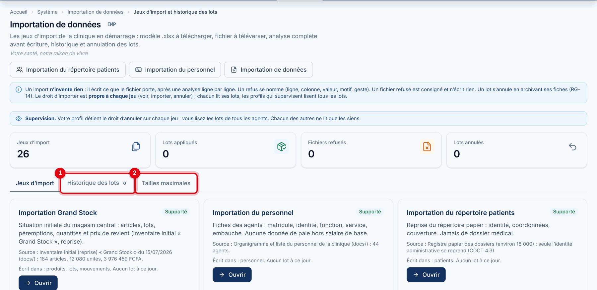
Les jeux d’import. (1) Historique des lots, (2) Tailles maximales.
Ouvrez la page du jeu, par exemple Importation du répertoire patients.
Dans 1. Télécharger le modèle, cliquez sur Télécharger le modèle (.xlsx). Le classeur a trois feuilles : « Données », « Instructions », « Listes ».
Remplissez la feuille « Données » en respectant les colonnes obligatoires et les valeurs permises.
Téléversez le fichier. Le logiciel l’analyse en entier avant d’écrire quoi que ce soit.
Lisez le rapport. Un refus se nomme : ligne, colonne, valeur, motif, geste de correction. Corrigez et recommencez.
Validez l’import. Le lot apparaît dans Historique des lots.
La page d’un jeu : modèle, colonnes, types, valeurs permises, exemple.
ℹ️
Information
Un import n’invente rien. Un lot s’annule en l’archivant (RG-14).
Le même fichier importé deux fois est reconnu comme le même lot : la mère le confirme une fois.
Le répertoire patients ne reprend que l’identité administrative, jamais le dossier médical. Le code patient (RG-01, format CNT/[n°]/[année]) est attribué par le logiciel.
Les jeux qui écrivent la configuration sont réservés à la mère.
⚙️
Paramétrage : qui peut importer
Le droit d’importer se règle par jeu et par rôle : icône Régler les importations de ce rôle à Rôles & permissions (RBAC).
4.4 Clôture d’exercice
Ouvrez Financier ➔ Comptabilité SYSCOHADA ➔ Exercices & clôtures. Un exercice a trois états : ouvert, en clôture (les modules n’écrivent plus), clôturé (lecture seule).
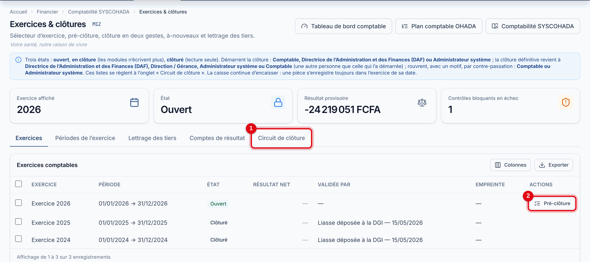
Exercices & clôtures. (1) onglet Circuit de clôture, (2) Pré-clôture.
1. Régler le circuit de clôture
Le circuit dit qui démarre la clôture, qui passe les écritures d’inventaire, qui clôture définitivement, qui rouvre, et le mois d’ouverture de l’exercice suivant. Il faut le geste réservé Régler le circuit de la clôture annuelle.
Ouvrez l’onglet Circuit de clôture.
Modifiez les rôles de chaque réglage.
Saisissez la Date d’effet et le Motif du changement (obligatoire).
Cliquez sur Enregistrer le circuit. Une nouvelle version datée est créée ; les anciennes restent à Historique des versions (jamais réécrites).
Le circuit en vigueur aujourd’hui et l’historique de ses versions.
2. Clôturer un exercice
Sur la ligne de l’exercice, cliquez sur Pré-clôture. Lisez les contrôles.
Cliquez sur Démarrer la clôture. Rien n’est figé : la saisie peut reprendre tant que la clôture définitive n’est pas faite.
Une autre personne que celle qui a démarré clique sur Clôturer définitivement, avec un motif. Le logiciel passe d’un seul tenant la pièce de clôture (journal CL), la pièce d’à-nouveaux (journal AN) de l’exercice suivant, le verrou et l’archive.
🛑
Alerte
Après la clôture définitive, l’exercice est en lecture seule. Une réouverture se fait avec Rouvrir, par un rôle autorisé, avec un motif, par contre-passation. Sur un fileul, une pièce datée d’un exercice clos est refusée par la mère au moment de la synchronisation.
ℹ️
Information
La caisse continue d’encaisser pendant la clôture : une pièce s’enregistre toujours dans l’exercice de sa date. Les soldes d’ouverture inconnus restent « inconnus », jamais zéro.
5. Sécurité et sauvegardes
5.1 Les trois niveaux de sauvegarde
Niveau
Ce qui est copié
Où
Section
Sauvegarde locale de la mère
Base de la mère (chiffrée, chaque nuit, gardée 7 jours) et fichiers numérisés
La destination réglée par la clinique
5.2 et 5.3
Sauvegarde hors site
Les mêmes copies, en blocs chiffrés par la clé de clinique
Relais web ou dossier distant monté
5.4
Journal chiffré au relais
Les opérations synchronisées
Relais web
5.5
5.2 Choisir la destination de la sauvegarde locale
Ouvrez Système ➔ Sécurité & Utilisateurs ➔ Tâches planifiées.
Dans Sauvegarde du magasin et des fichiers numérisés, lisez la Destination.
Cliquez sur Destination de la sauvegarde (1) et choisissez un autre disque ou un partage réseau.
Tâches planifiées : la destination de la sauvegarde et le registre des tâches.
🛑
Même disque que les données
Par défaut, la copie est sur le même disque que les données. Elle ne protège pas d’une panne de disque. Désignez un autre disque ou un partage réseau dès l’installation.
ℹ️
Sur le poste
Sur l’application de poste, la sauvegarde et sa destination se règlent à Système ➔ Sécurité & Utilisateurs ➔ Sauvegardes & restauration (carte Sauvegarde hors site comprise), et à la console de la mère.
5.3 Sauvegarder et vérifier depuis la mère
Ouvrez Poste mère ➔ Sécurité et continuité ➔ Sauvegardes et restauration.
Sauvegardes et restauration de la mère. (1) Sauvegarder maintenant, (2) Vérifier la dernière, (3) onglet Restaurer.
Cliquez sur Sauvegarder maintenant (1) avant toute opération sensible (mise à jour, clôture, import important).
Cliquez sur Vérifier la dernière (2). La colonne Vérification passe à Vérifiée.
✅
Bonne pratique
Une sauvegarde jamais restaurée n’est pas une sauvegarde. Faites une restauration à blanc chaque mois sur une machine propre (section 5.5), et notez la date.
La copie hors site protège contre la perte de la clinique entière (vol, incendie, panne de disque). Elle est désactivée par défaut. Elle se règle sur la mère, par l’administrateur ou la DAF.
Elle se règle dans l’application de poste, carte Sauvegarde hors site de l’écran Sauvegardes & restauration (cette carte n’existe pas dans la maquette, elle est décrite ici depuis le code du poste).
Sur la mère, ouvrez Système ➔ Sécurité & Utilisateurs ➔ Sauvegardes & restauration.
Dans la carte Sauvegarde hors site, cliquez sur Régler la copie hors site.
Cochez Copie hors site active.
Choisissez la Destination du magasin et la Destination des fichiers numérisés : Relais web, Dossier distant monté ou Aucune destination. Pour un dossier distant, saisissez son chemin complet.
Réglez Copies du magasin gardées (2 à 60), Copies des fichiers gardées (2 à 60), Fréquence des fichiers (minutes, 15 à 1440), Heure du contrôle de nuit (0 à 23) et Blocs vérifiés chaque nuit (0 à 200).
Saisissez le Motif (consigné dans le journal).
Cliquez sur Enregistrer. Le message Réglage enregistré. s’affiche.
Lancez une première copie avec Copier le magasin maintenant, puis Copier les fichiers maintenant. Contrôlez avec Contrôler les copies.
ℹ️
Ce que voit le relais
La copie est chiffrée au poste mère par la clé de la clinique avant de partir. Le relais ou le dossier distant ne reçoit que des blocs opaques : des identifiants, des tailles, des dates. Un fileul lit le réglage, mais ne le pose pas.
⚙️
Paramétrage : la place sur l’hébergement
L’espace d’un cPanel mutualisé est limité. Le panneau du relais affiche l’espace utilisé (écran Sauvegarde du relais, section 7.8). Au-delà de N copies, la plus ancienne est archivée (toujours restaurable). Elle n’est purgée que si l’espace manque. Si l’espace manque encore, la copie est refusée avec le code ESPACE_RELAIS_INSUFFISANT et rien d’actuel n’est détruit : augmentez le quota, réduisez le nombre de copies gardées, ou passez à un dossier distant.
⚠️
Pas encore fait ni vérifié
La copie par SFTP n’existe pas. La mesure réelle sur l’hébergement cPanel (espace, taille maximale d’une requête, temps d’exécution) reste à faire avant la mise en service.
5.5 Restaurer, remplacer la mère
1. Restaurer une copie hors site
Dans la carte Sauvegarde hors site, cliquez sur Restaurer une copie.
Choisissez le type : Magasin (base de la mère) ou Fichiers numérisés, puis la copie.
Saisissez un Dossier NEUF de destination (chemin complet).
Tapez le mot de confirmation demandé (« Pour confirmer, tapez … »).
Cliquez sur Restaurer. Le message Copie restaurée et vérifiée. confirme.
ℹ️
Information
La restauration vérifie chaque bloc (empreinte, authentification, longueur) avant d’écrire. Un bloc altéré ou manquant est refusé et nommé : rien n’est restauré à moitié. La base en service n’est jamais touchée.
2. Remplacer la mère par une nouvelle machine
Installez le poste sur la nouvelle machine (chapitre 1).
Sur l’écran Sauvegardes et restauration de la mère, ouvrez l’onglet Remplacer la mère et suivez ses étapes.
La restauration passe par le journal chiffré du relais avec la clé de clinique : sans la bonne clé, rien n’est écrit.
🛑
Alerte
Remplacer la mère se fait par restauration sur la nouvelle machine, jamais par copie de fichiers. Une seule mère peut être active par clinique : l’ancienne doit être arrêtée. La restauration incrémente l’époque : les anciens appareils ne ressuscitent rien.
6. Impression et MECeF
6.1 L’imprimante de caisse Xprinter XP-Q800
La caisse imprime ses reçus sur une imprimante thermique directe Xprinter XP-Q800 (ou une variante de même châssis, XP-N160II ou XP-C260N) : rouleau 80 mm, massicot, liaison USB ou Ethernet selon la version (à vérifier à l’arrière de l’appareil). C’est l’imprimante du gabarit rouleau 80 mm. Ce n’est pas le boîtier MECeF.
1. Installer l’imprimante sous Windows
Branchez l’imprimante (USB) ou reliez-la au réseau (Ethernet). Chargez un rouleau de 80 mm.
Installez le pilote Windows fourni par le fabricant avec l’imprimante.
Dans Paramètres Windows ➔ Imprimantes et scanners, définissez la XP-Q800 comme imprimante par défaut du poste de caisse.
Imprimez une page de test depuis Windows.
2. Imprimer un ticket depuis le poste
À la caisse, ouvrez l’aperçu du Ticket de caisse. Le gabarit fait 80 mm de large, sa hauteur suit le contenu.
Cliquez sur Imprimer : le poste envoie le document à l’imprimante par défaut du système. Vous pouvez aussi Enregistrer en PDF.
⚠️
Non vérifié sur matériel réel
L’impression vers une imprimante physique n’a pas été essayée dans l’environnement de rédaction, ni la coupe du massicot. Sans imprimante par défaut, le poste affiche un refus nommé : « Vérifier qu’une imprimante par défaut est installée. » Faites un essai de ticket complet sur la vraie caisse avant la mise en service.
✅
Bonne pratique
Sur le poste de caisse, la XP-Q800 est l’imprimante par défaut. Les documents A4 (factures détaillées, états) s’impriment depuis un autre poste, ou en choisissant l’imprimante A4 dans la boîte d’impression du lecteur PDF.
6.2 MECeF : choisir le mode de certification
Le MECeF certifie les factures normalisées. La Direction a retenu le boîtier physique, avec une certification locale à la caisse. Deux modes existent : Boîtier physique (défaut) et e-MECeF.
Dans Mode de certification, lisez le Mode en vigueur.
Cliquez sur Régler le mode (1) (sur le poste : choisissez le mode puis Enregistrer le mode).
Vérifiez les Paramètres fiscaux : ils sont en lecture seule ici et viennent de l’identité légale (section 4.2).
Configuration fiscale : mode de certification, paramètres fiscaux, mentions portées sur chaque facture.
⚙️
Paramétrage
Le mode se règle par l’administrateur ou la Directrice Administrative. Il est enregistré en base (paramètre mecef.mode), versionné par date.
⚠️
Boîtier en attente des réponses du fournisseur
Le modèle du boîtier, son interface et son protocole ne figurent dans aucun document remis. Les questions au fournisseur et à la DGI ont été remises à la Direction. Tant que l’adaptateur du boîtier n’est pas branché :
une vente est encaissée et reste en attente de certification ;
elle ne reçoit aucun numéro : aucun numéro n’est fabriqué comme s’il était fiscal ;
elle se retransmet quand l’adaptateur sera branché, sans consommer l’essai du caissier.
Le mode e-MECeF est dans le même cas : non configuré, le dossier d’interface de la DGI est requis. La maquette, elle, simule un appareil de démonstration et le dit ; le poste n’a aucun adaptateur.
🔍
Où regarder
Les factures en attente se lisent à Transmission & réponses. Le Journal des transactions est immuable : une facture erronée se corrige par un avoir (Avoirs & annulations), jamais par modification.
7. Le relais web sur cPanel
7.1 Ce que fait le relais, ce qu’il ne voit jamais
Le relais est installé sur l’hébergement mutualisé cPanel de la clinique, au domaine sighcnt.nassieratoo.com. Il est opaque : il stocke des enveloppes chiffrées de bout en bout et des indicateurs sans nom de patient. Il ne détient aucune clé.
Le relais voit
Le relais ne voit jamais
L’identifiant et l’état de chaque appareil
Le sens, le rang, la taille et la date d’une enveloppe
Les indicateurs publiés par la mère (agrégats sans nom)
L’état de synchronisation des fileuls (compteurs, horodatages)
L’identifiant, la taille et la date d’un bloc de sauvegarde
Le contenu d’une enveloppe (chiffré)
Un nom de patient, un dossier, un motif
Le nom d’une collection ou d’un champ
Le contenu, le nom ou le nombre de fichiers d’une sauvegarde
La clé de clinique
🛑
Protégez-le comme un serveur de santé
Même compromis, le relais ne livre pas de dossier. Mais il porte l’accès aux boîtes des téléphones et les sauvegardes chiffrées. HTTPS obligatoire, mot de passe superadmin long, secret de la mère long.
ℹ️
Contraintes de l’hébergement
PHP 8.2 ou plus, PostgreSQL, une tâche cron chaque minute. Pas de SSH, pas de Redis, pas de WebSocket, pas de npm. Le panneau n’utilise aucune ressource externe.
7.2 Déployer le relais
1. Préparer le dossier sur un poste de développement
Dans le dossier apps/web, lancez composer install --no-dev --optimize-autoloader. Cela produit le dossier vendor/ (cPanel n’a ni Composer ni SSH).
Lancez php artisan key:generate --show et gardez la valeur affichée pour APP_KEY.
2. Téléverser
Téléversez tout le dossierapps/webhors de public_html, par exemple dans ~/sigh-relais/ (Gestionnaire de fichiers de cPanel, ou « Git Version Control » si l’hébergeur le propose).
Dans cPanel, faites pointer le domaine sighcnt.nassieratoo.com vers ~/sigh-relais/public.
Activez le certificat HTTPS du domaine (AutoSSL ou équivalent de l’hébergeur).
🛑
Alerte
La racine web doit être public/, rien d’autre. Le reste du dossier contient .env, vendor/ et le code : il ne doit jamais être servi.
3. Base de données et PHP
cPanel ➔ PostgreSQL Databases : créez la base, l’utilisateur, et accordez tous les privilèges.
cPanel ➔ MultiPHP Manager : choisissez PHP 8.2 ou plus pour le domaine.
cPanel ➔ Select PHP Version : activez les extensions pdo_pgsql, mbstring, openssl, ctype, json.
Donnez les droits d’écriture aux dossiers storage/ et bootstrap/cache/ (755, ou 775 si l’hébergeur l’exige).
7.3 Le fichier .env
Copiez production.env.exemple en .env à la racine du dossier téléversé, puis renseignez-le. Le tableau donne les variables, jamais leurs valeurs secrètes.
Variable
Valeur attendue
APP_ENV
production
APP_DEBUG
false
APP_URL
https://sighcnt.nassieratoo.com
APP_KEY
la valeur produite par key:generate --show (secret)
la base PostgreSQL créée dans cPanel (mot de passe : secret)
SESSION_SECURE_COOKIE
true (cookie réservé à HTTPS)
RELAIS_SECRET_MERE
un texte long et aléatoire, 32 caractères au moins (secret). Le même texte se saisit sur la mère.
RELAIS_SEUIL_BATTEMENT_MS
le silence de la mère toléré avant l’alerte (5 minutes par défaut)
RELAIS_BANC
false (les crochets du banc d’essai sont fermés)
🛑
Les secrets
Le .env n’est jamais versé au dépôt de code, jamais envoyé par courriel, jamais photographié. Rangez une copie des secrets avec la copie papier de la clé de clinique. La clé de clinique, elle, ne va jamais sur le relais.
⚙️
Messagerie du relais
Le serveur d’envoi et son mot de passe se règlent dans le panneau (Paramètres du relais, carte Messagerie SMTP du relais), pas dans le dépôt. Le mot de passe est chiffré et jamais relu. Un bouton Envoyer un message de test nomme l’étape en échec.
⚠️
Écart à confirmer : deux noms de domaine
Le relais est servi à sighcnt.nassieratoo.com. Les valeurs de messagerie proposées par défaut dans le dépôt utilisent un autre nom : serveur mail.sigh.nassieratoo.com, adresse contact@sigh.nassieratoo.com. Le guide de déploiement (DEPLOIEMENT-CPANEL.md) ne nomme pas le domaine (il écrit relais.exemple.bj). Confirmez auprès de l’hébergeur le nom exact du serveur de messagerie et corrigez les valeurs par défaut si besoin.
7.4 Commandes ponctuelles et tâche cron
Sans SSH, une commande se lance par une tâche cron à usage unique : cPanel ➔ Cron Jobs, réglez l’heure sur la minute suivante, attendez l’exécution, puis supprimez la tâche. Le chemin de PHP est /usr/local/bin/php (ou ea-php82 selon l’hébergeur).
Besoin
Commande
Exporter la base avant une migration
cd ~/sigh-relais && /usr/local/bin/php artisan relais:exporter --avant-migration
Créer les tables
cd ~/sigh-relais && /usr/local/bin/php artisan migrate --force
Créer le compte superadmin
cd ~/sigh-relais && /usr/local/bin/php artisan relais:superadmin <courriel> --mot-de-passe='<mot de passe>'
Vider les caches après une mise à jour
cd ~/sigh-relais && /usr/local/bin/php artisan optimize:clear
Voir les volumes (sans contenu)
php artisan relais:statut
🛑
Alerte
Après la création du compte superadmin, effacez aussitôt la ligne de cron qui contient le mot de passe.
⚠️
Longueur du mot de passe superadmin
La commande accepte 8 caractères au moins, mais l’écran Comptes superadmin et le fichier lisez-moi du relais demandent 12 caractères au moins. Choisissez au moins 12 caractères. L’écart de texte est à corriger dans le code.
relais:surveiller chaque minute : marque le passage du cron (écran Hébergement), lève ou résout les alertes ;
relais:exporter chaque jour à 03:00 : export de la base du relais ;
relais:purger --oui chaque jour à 03:10 : purge de l’audit au-delà de 365 jours (30 au minimum). Les enveloppes ne sont jamais purgées depuis le relais.
⚠️
Écart à corriger dans le guide
Le guide DEPLOIEMENT-CPANEL.md (section 4) dit « Rien n’est planifié aujourd’hui côté relais ». C’est dépassé : les trois tâches ci-dessus sont planifiées par le code du relais. Sans le cron, l’écran Hébergement affiche une alerte « Tâche cron non exécutée ».
7.5 Brancher la mère et contrôler avant la mise en service
Sur la mère, faites Activer le mode mère avec l’adresse sighcnt.nassieratoo.com et le même secret que RELAIS_SECRET_MERE (section 2.1).
Ouvrez le panneau : le Tableau de bord du relais doit afficher Mère ➔ En ligne (section 7.6).
Liste de contrôle
https://sighcnt.nassieratoo.com/panneau redirige vers la connexion ; l’accueil / aussi ; aucune autre page publique.
https://sighcnt.nassieratoo.com/.env et …/vendor/autoload.php renvoient une erreur 404.
RELAIS_BANC=false, APP_DEBUG=false, HTTPS forcé.
Aucune route banc/* ne répond (elles renvoient 404 sans RELAIS_BANC).
Une sauvegarde de la base du relais est planifiée.
La clé de clinique n’est ni sur le relais, ni dans le dépôt : copie papier sous scellé chez la Direction, détenteur nommé.
L’écran Hébergement ne montre aucune alerte.
7.6 Le panneau superadmin : connexion et tableau de bord
Ouvrez https://sighcnt.nassieratoo.com/panneau.
Saisissez le Courriel et le Mot de passe du compte superadmin.
Cliquez sur Se connecter (1).
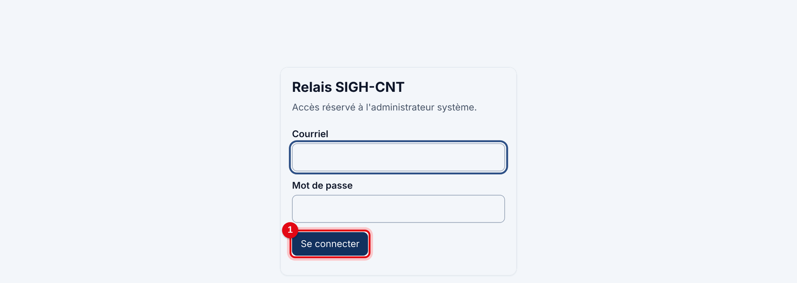
La connexion au panneau : accès réservé à l’administrateur système. Six essais par minute au plus.
Le menu du panneau a quatorze entrées : Tableau de bord du relais, Appareils, Boîtes aux lettres, Codes d’appairage, Indicateurs reçus, Synchronisation, Alertes et notifications, Journal d’audit du relais, Comptes superadmin, Paramètres du relais, Hébergement, Sauvegarde du relais, Preuve d’opacité, Consultation des copies. Un compte qui n’est pas superadmin ne voit aucune entrée.
Le tableau de bord : (1) la mère est-elle vivante ? Appareils actifs, enveloppes, alertes en cours. Actualisé toutes les 15 secondes.
ℹ️
Sur la capture
La copie locale tourne sur un ordinateur de test : les alertes « Espace disque faible » et « Tâche cron non exécutée » sont réelles pour cet ordinateur. Sur l’hébergement, elles disparaissent quand le disque a de la place et que le cron tourne.
7.7 Appareils, codes, synchronisation, alertes
Appareils
L’écran Appareils liste les appareils appairés : fonction, identifiant, état, dernier contact, enveloppes en attente.
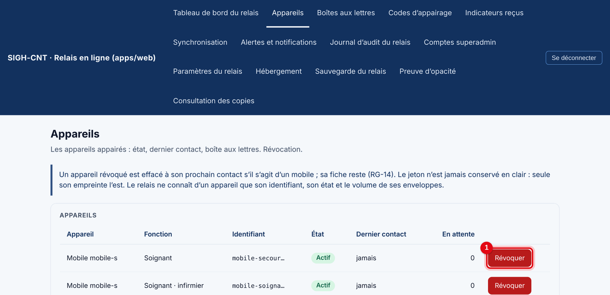
Les appareils vus par le relais. (1) Révoquer.
⚠️
Révoquer ici ne suffit pas
Révoquer coupe l’accès au relais. La fiche de l’appareil sur la console de la mère reste à mettre à jour. À l’inverse, une révocation faite sur la mère coupe aussi l’accès au relais : préférez révoquer depuis la mère (section 2.5).
Codes d’appairage
Le relais ne stocke que l’empreinte d’un code, jamais le code lui-même. Un code utilisé est refusé ; un code expire au bout de 15 minutes.
Codes d’appairage : valides, utilisés, expirés.
Synchronisation
L’écran Synchronisation (lecture seule) montre la mère, ses fileuls et les mobiles : dernier contact, retard, boîtes en attente. Une valeur que personne n’a publiée se lit « non publié », jamais zéro.
Synchronisation : état de la mère, des fileuls (publiés par la mère) et des mobiles.
Alertes et notifications
Les règles d’alerte : battement manquant, appareil bloqué, disque, cron, fileul ou mobile silencieux, boîte qui grossit.
⚙️
Paramétrage des seuils
Les seuils du battement, du disque et du cron se règlent dans le .env. Ceux de la synchronisation (fileul, mobile, boîte aux lettres) se règlent en base, dans Paramètres du relais. Toutes les valeurs de départ sont des propositions à valider par la Direction.
7.8 Paramètres, hébergement, sauvegarde du relais
Paramètres du relais
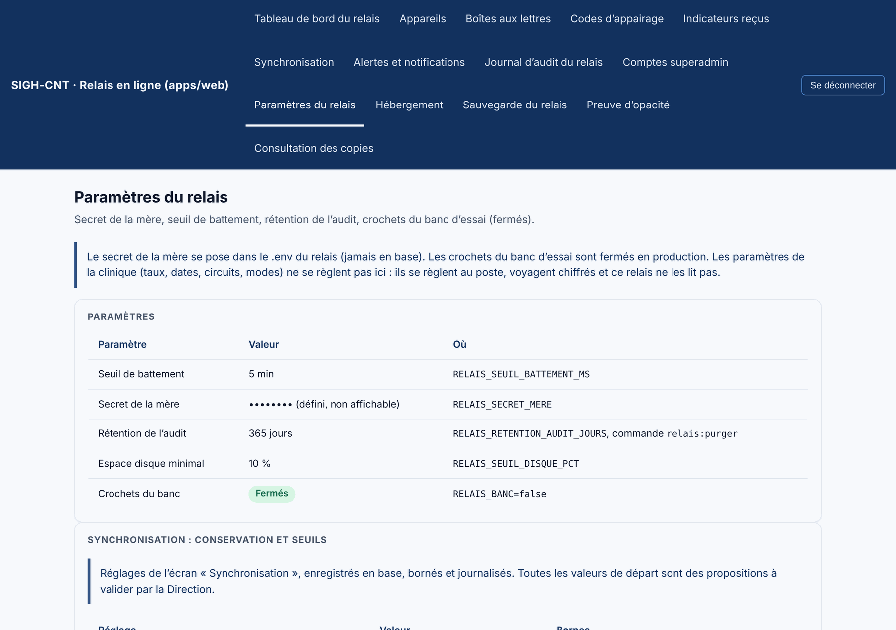
Paramètres du relais : chaque valeur dit où elle se règle. Le secret de la mère n’est jamais affiché.
ℹ️
Information
Les paramètres de la clinique (taux, dates, circuits, modes) ne se règlent pas ici : ils se règlent au poste, voyagent chiffrés, et le relais ne les lit pas.
Hébergement
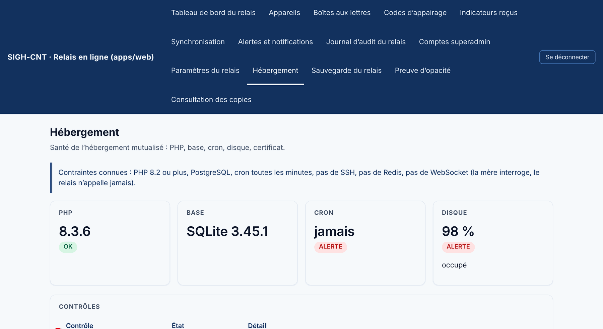
Hébergement : PHP, base, cron, disque, certificat. (1) Le passage du cron schedule:run.
🔍
Où regarder
Après la mise en service, consultez Hébergement chaque semaine : la ligne Cron schedule:run doit être OK, le disque sous le seuil, le certificat TLS valide.
Sauvegarde du relais
Ouvrez Sauvegarde du relais.
Cliquez sur Exporter maintenant (1). Le fichier est déposé dans storage/app/exports.
Téléchargez-le par le Gestionnaire de fichiers de cPanel et rangez-le hors de l’hébergement.
Sauvegarde du relais : exports de la base et, plus bas, l’espace utilisé par les sauvegardes hors site de la mère.
ℹ️
Information
L’export contient les enveloppes du journal, les appareils, les réglages et l’audit, déjà chiffrés. Il n’embarque pas les blocs des copies hors site (ils sont déjà des copies chiffrées, dans storage/app/sauvegardes). Perdre la base du relais ne perd pas les données de la clinique, qui vivent sur la mère, mais perdrait les boîtes des téléphones non relevées.
7.9 Preuve d’opacité, journal, comptes superadmin
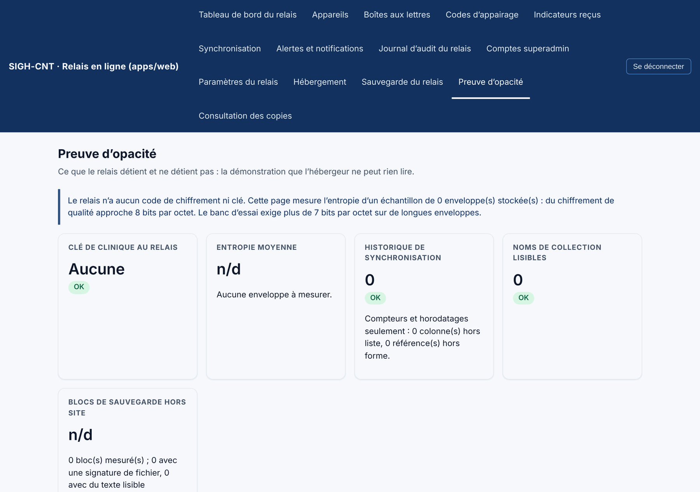
Preuve d’opacité : aucune clé au relais, entropie des enveloppes, tableau « ce que le relais voit ».
L’écran Preuve d’opacité démontre que l’hébergeur ne peut rien lire : il mesure l’entropie des enveloppes stockées (un bon chiffrement approche 8 bits par octet) et vérifie qu’aucun bloc de sauvegarde ne porte une signature de fichier ou du texte lisible.
L’écran Journal d’audit du relais donne qui a fait quoi sur le panneau : connexions, révocations, codes, changements de paramètres. Aucune action anonyme (RG-12).
Changer le mot de passe superadmin
Ouvrez Comptes superadmin.
Saisissez le Mot de passe actuel, le Nouveau mot de passe et la Confirmation.
Cliquez sur Changer le mot de passe (1).
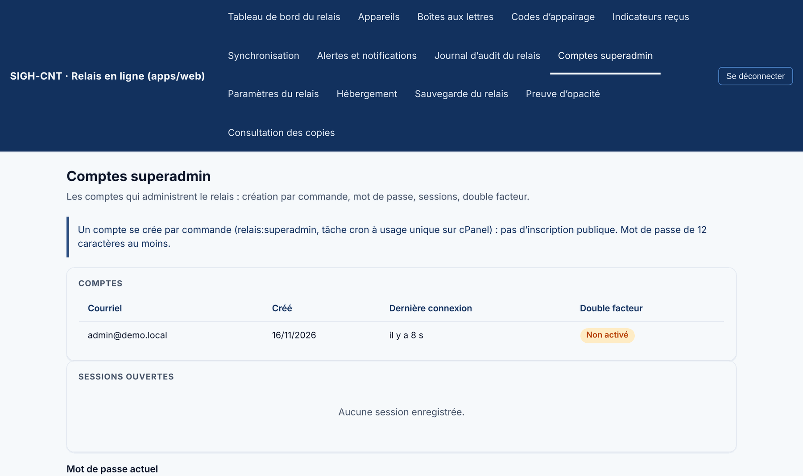
Comptes superadmin : comptes, sessions ouvertes, changement de mot de passe.
⚠️
Double facteur
Le double facteur n’est pas encore pris en charge par le relais : la colonne le dit. Un nouveau compte superadmin se crée seulement par la commande relais:superadmin (section 7.4), jamais par une inscription publique.
Consultation des copies
L’écran Consultation des copies permet de lire les dossiers copiés par les postes, avec la clé de la clinique saisie dans la page. La clé reste dans votre navigateur et n’est jamais envoyée au serveur ; fermer la page l’oublie.
🛑
Alerte
N’utilisez la consultation des copies que sur un ordinateur de confiance, jamais sur un poste public. Fermez la page juste après.
7.10 Mettre à jour le relais
Exportez la base du relais (relais:exporter --avant-migration par cron à usage unique, ou Exporter maintenant).
Préparez le nouveau code sur le poste de développement (section 7.2, étape 1).
Téléversez en écrasant, en conservant.env et storage/.
Lancez migrate --force par cron à usage unique.
Lancez optimize:clear par cron à usage unique.
Vérifiez le tableau de bord : Mère ➔ En ligne.
Annexes
A. Ce qui n’est pas couvert ou pas vérifié
Sujet
État au 16/11/2026
Installateur Windows, poste sous Windows
Écrit, jamais compilé ni exécuté sur un vrai Windows. Les cinq cas de désinstallation sont à rejouer sur un vrai poste.
Protection de la clé du poste (DPAPI), chiffrement de la base (SQLCipher)
Non éprouvés ; SQLCipher non branché.
Relais sur l’hébergement cPanel réel
Non déployé. Espace disque, taille de requête et temps d’exécution à mesurer.
Deux postes physiques, vrai routeur, Android
Non exercés ; la synchronisation est prouvée sur un seul ordinateur (processus réels).
Imprimante Xprinter XP-Q800
Non branchée ; impression par l’imprimante par défaut du système non essayée sur matériel.
Boîtier MECeF, e-MECeF
Aucun adaptateur : en attente des réponses du fournisseur et de la DGI.
Sauvegarde hors site par SFTP
Non faite.
Propagation de l’identité de la clinique à tous les postes
Décidée le 16/11/2026, mesure prévue au lot IDENT.
Double facteur du panneau superadmin
Non pris en charge.
Captures des écrans du poste
Prises sur la maquette de référence ; la carte Sauvegarde hors site et l’assistant d’installation du poste sont décrits depuis leur code, sans capture.
B. Écarts à corriger repérés pendant la rédaction
Nom du serveur de messagerie (mail.sigh.nassieratoo.com) différent du domaine du relais (sighcnt.nassieratoo.com) : à confirmer auprès de l’hébergeur (section 7.3).
DEPLOIEMENT-CPANEL.md section 4 : « Rien n’est planifié » est dépassé (section 7.4) ; le guide n’écrit pas le domaine de la clinique.
Mot de passe superadmin : 8 caractères pour la commande, 12 pour le panneau et le lisez-moi (section 7.4).
RCCM du jeu de départ ancien (RB/NAT/2016-B-268) ; numéro à jour NAT/2021/M02-020 à poser en version datée (section 4.2).
C. Petit glossaire
Mère
Le poste de référence de la clinique, sur le réseau local. Une seule par clinique.
Fileul
Un poste rattaché à la mère.
Relais web
Le site sur l’hébergement cPanel qui transporte les enveloppes chiffrées.
Appairage
Le rattachement d’un poste ou d’un téléphone par un code à usage unique.
Clé de clinique
La clé qui chiffre tout ce qui quitte la clinique. Jamais au relais.
Secret de la mère
Le texte qui identifie la mère auprès du relais (RELAIS_SECRET_MERE).
Enveloppe
Un paquet d’opérations chiffré, déposé au relais.
Battement
Le signe de vie que la mère envoie au relais.
Geste réservé
Un acte qui engage un professionnel nommé, accordé par rôle.
Version datée
Une nouvelle valeur qui s’applique à partir d’une date, sans effacer l’ancienne.
MECeF
Le dispositif de certification des factures normalisées (boîtier physique retenu).
Fin du manuel administrateur. Sources : docs/guides/, docs/architecture/adr/ (ADR-0005 à 0007), apps/web, apps/poste/lib, prototype_html/, docs/decisions/DECISIONS-A-VALIDER.md.